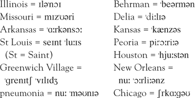

Thời gian: từ 1898 đến 1910. Địa điểm: Hoa Kỳ – vùng đông và trung của đất nước. Mời xem bản đồ ở trang 7.
Vào cuối thế kỷ thứ 19, nhiều gia đình ở Mỹ đã có điện tại nhà và công ty. Càng ngày càng nhiều người được sở hữu xe ô tô. Năm 1876, Alexander Graham Bell đã phát minh ra điện thoại. Nhờ thiết bị này, mọi người có thể nói chuyện trực tiếp với nhau dù ở xa xôi. Năm 1883, Thomas Edison đã sáng chế ra ngọn đèn điện. Ánh sáng rực rỡ của đèn điện đã chiếu sáng các con phố và các ngôi nhà ở thành phố lớn. Cùng thời gian này tại Mỹ, những đoàn tàu hỏa chạy băng băng trên các đường ray.
O. Henry đã viết các câu chuyện về tầng lớp giàu có cũng như những người nghèo khó. Có một số câu chuyện nói về tội phạm và thám tử. Trong thời kỳ này, các tội phạm đã trở nên gian xảo hơn và phạm vi hoạt động của chúng cũng rộng hơn. Chúng sử dụng ô tô và tàu hỏa, nhờ đó dễ dàng trốn khỏi sự truy đuổi của cảnh sát. Những tên trộm đột nhập vào nhà dân và các cửa hàng, lấy đi tiền bạc và tài sản. Bọn phá két dùng các công cụ chuyên dụng để mở những chiếc két sắt kiên cố trong ngân hàng, trộm số tiền lên đến hàng nghìn đô la.
Lực lượng cảnh sát thu thập một lượng lớn thông tin về tội phạm. Trong các hồ sơ cảnh sát, người ta ghi chú màu tóc, màu mắt, chiều cao, cân nặng và tuổi tác của các đối tượng hình sự.
Ngày càng nhiều thám tử tham gia vào công tác điều tra tội phạm. Mỗi tiểu bang đều có điều tra viên – một lực lượng cảnh sát đặc biệt làm nhiệm vụ cho chính phủ. Họ săn lùng tội phạm và điều tra vụ án. Còn thám tử tư làm việc theo yêu cầu của khách hàng. Khách hàng thuê thám tử tư để tìm người hoặc vật.
Ghi chú:
